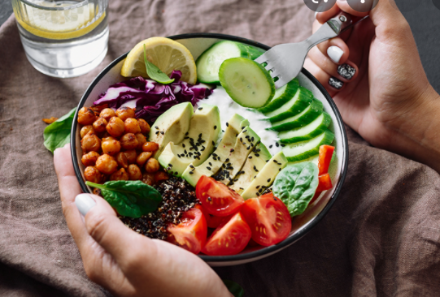

Eating healthy is one of the most talked-about and debated topics out there these days. Most of us do not eat the diet we should be consuming, and it can be really hard to change your ways at first. If you are trying to incorporate a healthier
lifestyle, the most effective way to do this is not to follow any fad diet plans or trendy exercise regimes. The best way to adopt a healthier lifestyle–and make it stick–is to slowly change small things about your diet, and simultaneously
develop healthy eating habits over time. You are much more likely to make your healthy eating choices a habit and keep making them for the rest of your life. So, while it is tough to
completely change your eating habits overnight, we have compiled a handy list of very simple changes and healthy eating guidelines you can follow that will leave you feeling healthier and happier throughout the day.

You may not be quite on the level of some fitness pros yet, but studies have shown the amount of time we spend on meal preparation correlates with healthier eating habits overall. If you cut up all of your produce when you get it, and place it in containers with clear sides, you are more likely to grab those already-prepped healthy fruits and vegetables instead of snacking on chips or cookies due to ease of access. Try this with peppers, cucumbers, and carrots, as well as having a carton of hummus nearby for convenient snacking! One of our favorite things to do is cook a few extra chicken breasts when we do have time to cook–it does not add much to your overall cooking time, but then you can shred the extra chicken for salad or tacos, cube it for stir-fry, or slice it for a quick sandwich, without having to start from scratch.
Having a plan is helpful whether you are eating at home or eating out at restaurants. You almost always make better decisions if you come into a situation informed. Have you ever gone grocery shopping without a list? Especially while you are hungry, this can be a nightmare–if you're like me, you may end up at home with a bunch of Cheetos and some Bagel Bites, and no full meal options. Always bring a list with you when you are going grocery shopping or to the Farmer’s Market, and plan where everything in the store will be (that will save you time, too). A good grocery list focuses on whole ingredients that you can re-use multiple times before they go bad. So instead of having different vegetables every single night, try to alternate between a few combinations to get the most out of your list.